Community tools
Analyses that anyone can add
One Python file and a manifest. No interface code.
def run(ds, params):
...
return {"summary": ...,
"cells": ...,
"table": ...}# name type default
gene gene
k int 15
normalize select log1p
alpha float 0.05
fdr bool true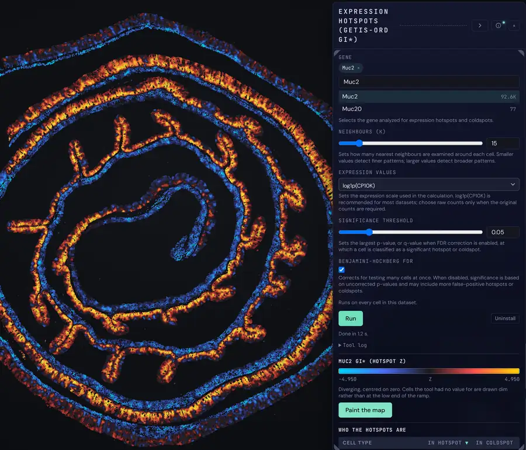
- tool.py
run(ds, params) - plugin.json Parameters, needs, outputs
- Form Generated from the manifest
- Result Drawn by the viewer
Nine gates Checked on publish and again on install.
- bundle, required
- manifest, required
- entry, required
- imports, advisory
- fixture, required
- result, required
- determinism, required
- edge, required
- no_mutation, required
imports is advisory.
12 tools
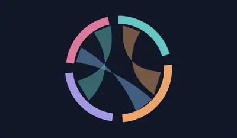
Categorical Chords: Which annotations share contacts or members, as count-weighted ribbons?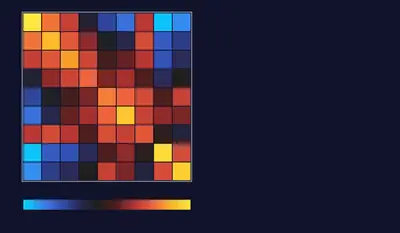
Cell-Type Co-occurrence: Which pairs of types are adjacent more often than chance?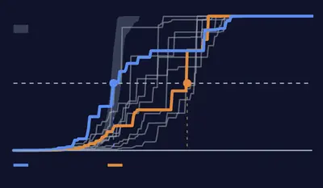
Cell-Type Percolation: Is a cell type one connected mass or many islands?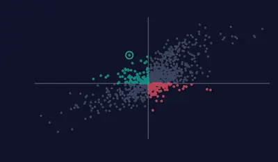
Conditional Contact Odds: How much does one more neighbour of type B change the odds a cell is type A?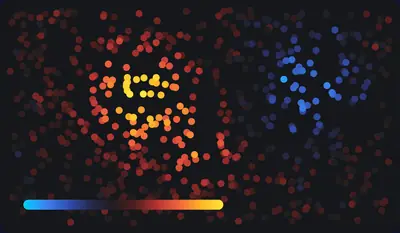
Expression Hotspots: Where does one gene form clusters of high or low expression?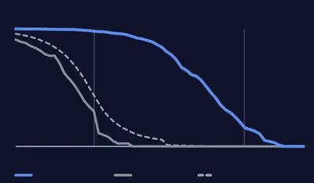
Interface Coherence: Do two cell types meet along one front, or in specks?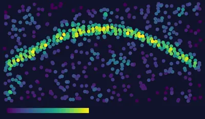
Local Cell Density: How crowded is the tissue around each cell?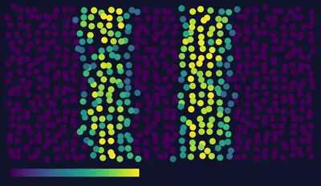
Neighborhood Composition: How interleaved is each cell’s neighbourhood, and who sits next to whom?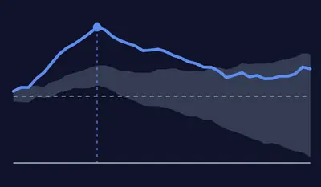
Ripley’s Cross-L: At what distance does cell type B accumulate around type A?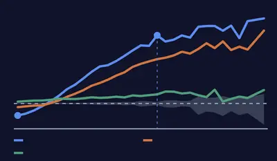
Spatial Scale Spectrum: How clustered is each cell type, at every length scale?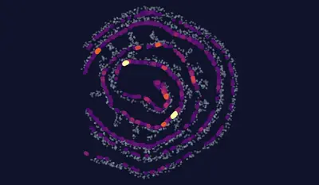
Tissue Permeability: Which cells does one type seal off from the rest of the tissue?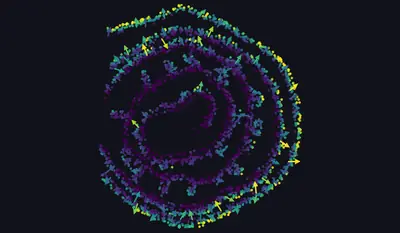
Vector Field: Which way does a quantity increase across the tissue?